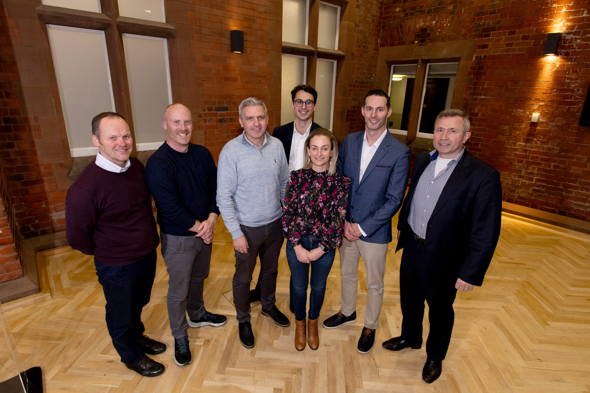
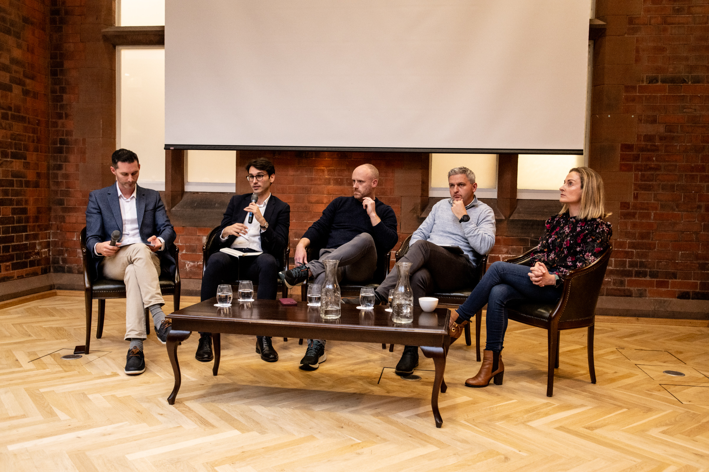

FAB Symposium 2023
AI and the Future of Financial Regulation

From right to left: Barry Quinn (QBS), Chris Clements (FinTrU), Adrian Johnston (Catalyst Inc), Pavle Avramovic (FCA), Carla McGlynn (Citi), Fearghal Kearney(QBS), Daniel Broby (UU)
It marked the first outing for our lab, wrapping up six months of hard graft and preparation. The vibe of the afternoon? Smart-casual to a tee. Insightful talks from keynote speakers and academics bringing the ‘smart’, all set against the backdrop of our laid-back organisers (Fearghal and Barry) adding a good dollop of ‘casual’.
We drew in a diverse crowd, from the big names in FinTech like Citi Belfast, Kainos, and Davy’s Wealth Managers, to the sharp minds at Cardinal Analytics, FD Technologies, and FinTrU. Not to mention the folks from PWC, College Green Ventures, Resourceful Planner, and the legal eagles at Baker McKenzie and AI Goodbody. And of course, our supporters from InvestNI, Belfast Chamber of Trade and Commerce, and the Software Alliance.
We tackled the hot topic of AI and financial regulation from every angle - the regulators, the academics, and the industry practitioners. It was an enjoyable afternoon and a fantastic way to set the ball rolling for our wee lab.
What a great afternoon we had on the 23rd of November at Riddel Hall, where we officially launched our wee Finance AI Research Lab with our first symposium!
Academic Presentation
 Alright, let’s switch gears to Professor Wang’s presentation on “AI and Compliance Audit”. As a professor of AI, Hui dives deep into the techy side of using AI in making sure everyone’s playing by the rules in auditing. We’re talking about some technologies that AI brings to this wicked problem.
Alright, let’s switch gears to Professor Wang’s presentation on “AI and Compliance Audit”. As a professor of AI, Hui dives deep into the techy side of using AI in making sure everyone’s playing by the rules in auditing. We’re talking about some technologies that AI brings to this wicked problem.
First up, there’s advances in Natural Language Processing (NLP). This isn’t your everyday chattty AI; it’s like giving a super-brain the ability to chew through complex legal jargon and regulations. A machine that can potentially make sense of all that legal “rules on the book” using logic-based algorithms.
Then, comes the machine learning algorithms,the kind that can spot the odd one out in heaps of data. These clever algorithms are like detectives, sniffing out anything fishy that might point to someone bending the rules.
And don’t forget about Computer Vision. This isn’t just about giving computers eyes; it’s about teaching them to be eagle-eyed when it comes to scanning documents and images. They’re making sure every ‘i’ is dotted and every ‘t’ is crossed for compliance.
But,it’s not all about the gushy AI hype. The presentation doesn’t shy away from the tough bits, like making sure the data’s up to scratch and keeping the AI’s decision-making clear as day. Plus, there’s the big question of ethics – how do we use AI without stepping on privacy toes or shaking up jobs in the auditing world?
In short, Professor Wang’s talk is a deep dive into the cool, complex world of AI in compliance auditing, blending the high-tech with the high-stakes of keeping things on the straight and narrow.
Full slide deck can be found here
Daniel’s presentation tackled the topic of “Financial Auditing of Distributed Ledgers, Blockchain, and Cryptocurrencies”. This one’s a real eye-opener, diving into the twisty world of auditing in the age of blockchain and crypto.
Daniel kicks off with transaction malleability in the blockchain. It sounds like a mouthful, but think of it as the art of making sure each transaction is what it claims to be, even when the blockchain’s being a bit slippery.
Next, he moves onto the Wild West of Digital Autonomous Organizations (DAOs). Auditing these bad boys is like trying to herd cats (or academics!), with their decentralised, headless nature throwing up all sorts of challenges.
Then there’s the melodrama of blockchain forks. Imagine auditing a road that suddenly splits in two – which path do you take? Daniel discusses the auditors’ headaches when the blockchain decides to go this way and that.
Auditors in blockchain custody is another hot topic. In this new world, auditors are like the blockchain’s guardians, making sure everything’s above board and secure. Cross-chain transactions are wicked problem in this space. It’s like auditing a deal that happens across multiple countries, each with its own rules. How do you even start to keep track of all that? Do the theories of international finance help here?
Daniel doesn’t stop there. He dives into the nitty-gritty of time-locked and multi-signature transactions, like those puzzles where you need two keys to open a treasure chest. And let’s not forget the rollercoaster ride that is cryptocurrency volatility. This stuff makes auditing a whole new ball game.
Daniel’s talk is a deep dive into the new frontier of financial auditing. It’s a world where everything’s digital, decentralised, and a bit unpredictable, highlighting just how much auditors need to up their game to keep up with these techy trends.
The full slide deck can be found here
Panel discussion on AI in financial services: Opportunities & Risks

And for the grand finale of the event, we had a cracking 45-minute panel discussion. Picture this: some of the brightest sparks from Northern Ireland’s buzzing private sector, all gathered to share their two cents. We had the big brains like Pavle Avramovic, who’s into Emerging Tech & Research at the FCA; Chris Clements, the whiz behind Product Development at FinTrU; Dr Adrian Johnston MBE, the strategic mastermind at Catalyst; and Carla McGlynn, the guru of Data, Business Risks, and Controls Technology at Citi Belfast. Leading this dream team was Dr Fearghal Kearney, and he wasn’t messing about – he hit them with two big questions:
- What’s the score with AI in Financial Services? What golden opportunities can Northern Ireland grab with both hands?
- And the flip side – what are the big risks and headaches of mixing AI into Financial Services?
The debate that kicked off was nothing short of lively. Adrian chipped in with his take on the top-notch research and innovation collabs already happening in Northern Ireland, not to mention some exciting prospects brewing up in the North West. When it came to the nitty-gritty of risks and challenges, Chris was on point, stressing how we’ve got to stop working in our own little bubbles. And Dr Kearney, the chair, had a cracker of a point – it’s high time for Data Scientists to stop lurking in the corner of the playground.
Carla dropped a gem too, reminding everyone that sometimes what we need from AI can be pretty straightforward, like getting those never-ending documents summed up for the busy bees at the top. All in all, it was a top-shelf discussion that really got the cogs turning on how Northern Ireland can play its cards right with AI in the financial game.
Event Slideshow